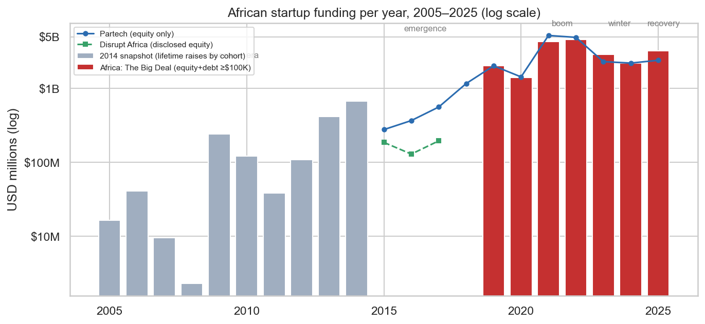
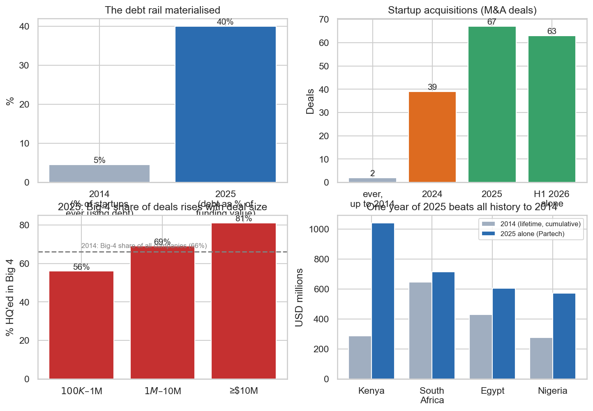
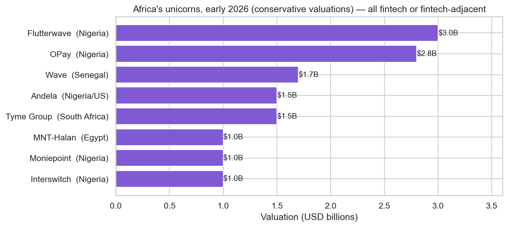
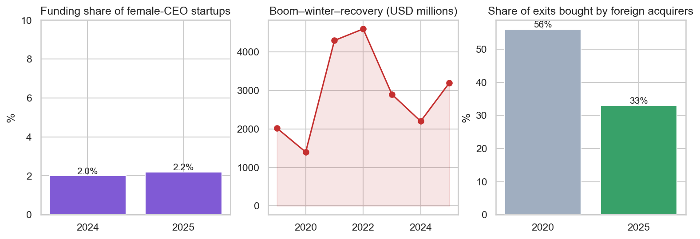

Executive summary
African startups now raise more in a single year than the entire recorded history of the ecosystem up to 2014. This report compares the 2014 baseline established in Report 1 (194 companies; $1.68 billion of lifetime funding) against the 2015 to 2026 record published by the credible trackers of African startup funding: Africa: The Big Deal, Partech Africa, Disrupt Africa, AVCA and TechCabal Insights. In 2025 alone the continent raised $3.2 to $4.1 billion (depending on tracker methodology) across roughly 500 deals, survived a 46% funding winter in 2023 and rebounded 25% to 40% in 2025, the only region worldwide where deal activity grew that year.
The seven 2014 lessons are graded against twelve years of evidence: three materialised, four remain partial. The capital structure lessons were fixed: seed cheques grew past the old $40,000 median and the missing debt rail became a record $1.64 billion market, 40% of all 2025 funding. The institutional lessons remain under construction: exits jumped from two acquisitions ever to a record 67 M&A deals in 2025 (with African buyers now doing two thirds of them), yet there is still no IPO market and the Series A and B missing middle persists. Big Four concentration deepened to 82% of funding.
Four new realities, invisible in the 2014 data, now define the risk landscape: an extreme and static gender funding gap (female CEO startups received 2.0% to 2.2% of funding in 2024 and 2025); an imported business cycle driven by global interest rates; a sector rotation in which cleantech overtook fintech as the top sector by capital in 2025; and currency risk as a first order variable, where naira devaluation pushed Nigeria, the former growth darling, into decline while Kenya took the number one spot ($1.04 billion, up 72%).
01Introduction and background
Report 1 ended with a diagnosis and seven recommendations; this report asks the only question that matters next: what actually happened? A diagnosis made on 2014 data is only useful if tested against the subsequent record. Between 2014 and 2026 the African ecosystem lived through an emergence phase, a global liquidity boom, a brutal correction and a recovery. That period constitutes a natural experiment on the 2014 lessons and this report scores each of them against published evidence, with every figure source linked.
The comparison also serves a practical investor need: separating structural progress from cyclical noise. Headlines about African tech oscillate between euphoria (record year) and despair (funding collapse). By anchoring on structural metrics, graduation rates, instrument mix, exit counts, concentration, this report shows which changes are durable market plumbing and which are tides that came in with global liquidity and went out with it.
02Objectives
The report pursues three objectives. First, to reconstruct the 2015 to 2025 funding record from primary trackers and reconcile their differing methodologies. Second, to compare today's ecosystem against the 2014 baseline metric by metric: scale, deal counts, instruments, exits, concentration, sectors, valuations. Third, to grade the seven lessons of Report 1 and identify new structural issues that no 2014 dataset could reveal.
03Data and methodology
3.1 Sources and collection
African funding data is published by trackers whose methodologies differ by design and any honest comparison must respect that. Africa: The Big Deal counts equity and debt deals of $100,000 or more (from 2019); Partech Africa counts deals of $200,000 or more, reporting equity and debt separately (from 2015, the longest series); Disrupt Africa counts only disclosed equity (the strictest definition, hence the lowest totals); AVCA reports venture capital deals as an industry association. For 2025 the resulting totals span $3.2B (Big Deal) to $4.1B (Partech, equity plus debt), a spread that reflects measurement, not disagreement about reality.
Data was collected in July 2026 through a combination of live scraping and hand curation, with every value carrying its source. Where technically possible the publishers' own pages were scraped directly (the Big Deal's 2025 year in review); all other figures were hand collected from the publishers' reports and articles into source linked tables. The 2014 baseline is recomputed from the cleaned dataset of Report 1. All sources are listed in the References; the companion notebook reproduces every number.
3.2 Data protection
As in Report 1, no personal data is processed. All figures are aggregate market statistics or publicly disclosed company level facts; named individuals appear only as public figure executives already named in cited press coverage. Scraping was limited to single requests against publicly accessible pages with the publisher credited. A full statement appears in Annexure C.
04Findings and analysis
All analysis in this section was designed and conducted by Michael Omega. Modern period figures are drawn from the sources listed in the References; 2014 baseline figures are recomputed from the Report 1 dataset.
4.1 The twenty year arc
One modern year of African startup funding now equals roughly twice everything the 2014 dataset had ever recorded. Three eras join on a logarithmic scale: the discovery era captured by the 2014 snapshot, the emergence years measured by Partech ($277M of equity in 2015 rising to $2.02B by 2019) and the modern period tracked in parallel by multiple publishers. The 2025 total of $3.2 to $4.1B compares with $1.68B of cumulative funding recorded to 2014. Against Disrupt Africa's ground measurement of 2015 ($186M of disclosed equity), 2025 is roughly seventeen times larger; an order of magnitude of growth is the honest summary.

The market also acquired a business cycle, imported, not domestic. The arc shows the 2021 and 2022 boom ($4.3 to $6.5B per year, fed by global zero interest rate capital), the 2023 crash (down 46%), the 2024 trough ($2.2B) and the 2025 recovery (up 25% to 40% year on year). Per AVCA, Africa was the only region worldwide where 2025 deal activity did not decline (up 4%). An ecosystem that absorbs a 46% shock and rebounds within two years is no longer an experiment, but its cycle is set in Washington, not Lagos.
4.2 Metric by metric: the 2014 baseline versus today
The transformation is clearest when each 2014 metric is placed beside its 2025 and 2026 counterpart. Table 1 makes the direct comparison and the four most consequential shifts are the debt rail (4.6% of startups ever using debt in 2014, versus debt composing 40% of 2025 funding value); exits (two acquisitions ever recorded to 2014, versus a record 67 M&A deals in 2025 and 63 in the first half of 2026 alone); concentration (the Big Four's share of funding rising with deal size, reaching 81% of $10M plus deals); and country totals (Kenya's $1.04B in 2025 alone exceeding any country's entire recorded history to 2014).
Table 1: The 2014 baseline versus the 2025 and 2026 evidence, by metric.
| Metric | 2014 baseline | 2025 and 2026 evidence | Verdict |
|---|---|---|---|
| Annual funding | up to $675M/yr | $3.2 to $4.1B (2025) | Order of magnitude |
| Deals per year | 49 newly funded (2014) | about 500 to 600 (of $100K+) | About 10x more |
| Companies worth $1B or more | 0 | 8+ unicorns (2026) | New asset class |
| Debt financing | 4.6% of startups ever | $1.64B = 40% of 2025 | Transformed |
| Exits (M&A) | 2 acquisitions ever (1%) | 67 in 2025; 63 in H1 2026 | Improved, still thin |
| Big Four concentration | 66% of firms, ~97% funding | 82% of 2025 funding | Unchanged or worse |
| Top country | South Africa ($647M) | Kenya ($1.04B, up 72%) | Leadership rotated |
| Dominant sector | E commerce, mobile, software | Fintech; cleantech #1 by capital | Web to infrastructure |
| Female CEO funding share | Not measurable | 2.0% (2024), 2.2% (2025) | Newly visible problem |

4.3 The unicorn generation
A class of billion dollar African companies now exists where none did in 2014 and every one of them is financial technology. The eight unicorns as of early 2026, at conservative valuations (sources value Flutterwave anywhere between $3B and $5.2B), are a combined roughly $13.5B, led by Nigerian payments and mobile money companies, with Wave (Senegal), Tyme (South Africa) and MNT Halan (Egypt) broadening the map. The top of the ecosystem has begun generating its own liquidity: Flutterwave acquired Mono in January 2026 and OPay is reported to be preparing a US IPO at a target valuation around $4B.

4.4 Grading the seven 2014 lessons
The scorecard's headline: the lessons investors could implement alone were implemented; the lessons requiring coordination were not. Bigger seed cheques (Lesson 1) and the debt rail (Lesson 6) materialised fully, both are capital structure choices individual investors control. Follow on capacity (Lesson 2), hub plus region strategy (Lesson 4), concentrated later bets (Lesson 5) and exits (Lesson 7) are partial, each depends on institutions (Series B funds, acquirers, public markets) that take a generation to build. The Latin American grant trap warning (Lesson 3) was heeded. This pattern precisely matches the Report 1 model's implication: capital structure is fixable fast; institutions are not.
Table 2: The seven 2014 lessons graded against the 2015 to 2026 record.
| # | 2014 lesson | 2026 verdict | Key evidence |
|---|---|---|---|
| 1 | Write bigger seed cheques | Materialised | Standard seeds now in the hundreds of thousands; the $100K floor is 2.5x the old median seed |
| 2 | Build Series A and B follow on capacity | Partial, the bottleneck | Series A investors up 7%, Series B up 29% in 2025; missing middle still most cited gap |
| 3 | Avoid the small grant trap | Avoided | Market moved to real seed, venture and debt instruments |
| 4 | Back hubs, think regional | Half materialised | Big Four took 82% of 2025 funding; francophone rise (Senegal number 5, Benin number 6) |
| 5 | Bigger, later, concentrated bets | Happened, repriced | 2021 and 2022 mega rounds and unicorns; 2025 shows disciplined up 8% equity growth |
| 6 | Develop the debt rail | Dramatically done | $1.64B of debt in 2025 = 40% of funding, record 108 deals |
| 7 | Engineer exit paths | Improving from low | Record 67 M&A in 2025 (up 72%); foreign acquirer share fell 56% to 33%; no IPO market |
4.5 New realities invisible in 2014
Four structural issues now shape African venture risk that no 2014 dataset could measure. First, the gender gap: startups led by female CEOs received 2.0% of 2024 funding ($48M) and 2.2% in 2025; only three of the hundred most funded African startups since 2019 have female CEOs. Second, the imported cycle: the boom, winter and recovery pattern tracks global interest rates, not African fundamentals. Third, capital localisation, the one strongly positive new trend: the share of exits bought by foreign acquirers fell from 56% in 2020 to 33% in 2025, meaning African buyers now do two thirds of deals. Fourth, currency risk: Nigeria was the only Big Four market to shrink in 2025 (down 3% on Partech's count, down 17% on the Big Deal's) largely on naira devaluation, while cleantech overtook fintech as the top sector by capital raised.

05Discussion
Composition matured faster than size and composition is what makes a capital market real. The 10x headline growth is less significant than what grew underneath it: a $1.6B debt market that did not exist, an exit market running at record pace with local buyers in the majority, eight unicorns generating acquisitions and IPO pipelines, plus sector rotation from consumer apps toward revenue generating infrastructure. These are the plumbing of a functioning market being installed in real time.
The bottleneck did not disappear; it moved up the ladder. In 2014 the constraint was seed too small. In 2026 it is growth capital and liquidity too thin. The structure of the problem is identical: capital exists to start the journey but thins out at the next stage, which is why the Report 1 recommendation that aged best (reserve follow on capacity) remains the highest leverage trade today.
Concentration is the uncomfortable finding for ecosystem builders. The Big Four's share of funding rose from roughly two thirds of companies (2014) to 82% of capital (2025) and concentration increases with deal size. The counter signal is francophone West Africa: Wave's Senegal headquarters, Senegal at number 5 and Benin at number 6 in 2025, the first data backed evidence for a next four thesis.
06Recommendations (2026 update)
- Fund the missing middle.
Series A and B remains the scarcest capital layer; the 2014 recommendation stands, now with far better proven pipelines behind it.
- Ride the debt rail with real credit skills.
40% of the market is now debt. Asset backed cleantech and lending books require credit underwriting, not venture instinct.
- Treat foreign exchange as a core underwriting variable.
Nigeria 2023 to 2025 is the case study: dollar returns on naira revenues repriced an entire country's deal flow.
- Build and back local capital pools.
Pension funds, corporates and family offices dampen the imported cycle and already form the majority of exit buyers.
- Price the gender gap as an inefficiency.
At 2% of funding, female led deal flow is the least competed segment on the continent, an equity problem and an alpha opportunity simultaneously.
- Position for liquidity events.
Unicorn M&A (Flutterwave and Mono) and IPO pipelines (OPay) will reprice the whole ecosystem; secondary positions and pre IPO exposure are now viable strategies.
07Limitations
- Tracker methodologies differ and the report deliberately preserves the spread. 2025 totals range from $3.2B to $4.1B across publishers; single source precision would be false precision.
- The 2014 baseline is a snapshot of lifetime funding, not annual flow, so growth multiples are order of magnitude statements. Unicorn valuations are private market estimates that vary by source; conservative figures are used.
- All amounts are nominal USD. Figures were collected in July 2026 and 2026 statements refer to events reported January to July 2026.
08Conclusion
So what? The 2014 diagnosis was right, the fixable half got fixed and the investable gap has moved. An investor reading Report 1 in 2014 and acting on its capital structure lessons would have been positioned ahead of the debt boom and the seed size normalisation. The same logic now points one rung higher: the scarce assets of 2026 to 2030 are Series A and B capacity, credit underwriting skill, local capital formation and exit engineering. Report 3 quantifies where those trends lead by 2030, with validated scenarios rather than headlines.
AAnnexure A: Tracker methodology comparison
| Tracker | Counts | Threshold | Series from | 2025 total |
|---|---|---|---|---|
| Africa: The Big Deal | Equity plus debt deals | $100K or more | 2019 | $3.2B |
| Partech Africa | Equity and debt (separate) | $200K or more | 2015 | $4.1B (eq + debt) |
| Disrupt Africa | Disclosed equity only | None | 2015 | strictest |
| AVCA | Venture capital deals | n/a | n/a | $3.9B / 506 deals |
| TechCabal Insights | Equity plus debt | n/a | n/a | $3.42B / 502 deals |
BAnnexure B: Unicorn register (early 2026)
African companies valued at $1 billion or more, conservative valuations.
| Company | HQ / origin | Sector | Valuation | Founded |
|---|---|---|---|---|
| Flutterwave | Nigeria | Payments | $3.0B (up to $5.2B) | 2016 |
| OPay | Nigeria | Mobile money | $2.8B (up to $3.1B) | 2018 |
| Wave | Senegal | Mobile money | $1.7B | 2018 |
| Tyme Group | South Africa | Digital banking | $1.5B | 2018 |
| Andela | Nigeria / US | Tech talent | $1.5B | 2014 |
| Interswitch | Nigeria | Payments | $1.0B | 2002 |
| Moniepoint | Nigeria | Banking / POS | $1.0B | 2015 |
| MNT Halan | Egypt | Lending | $1.0B | 2018 |